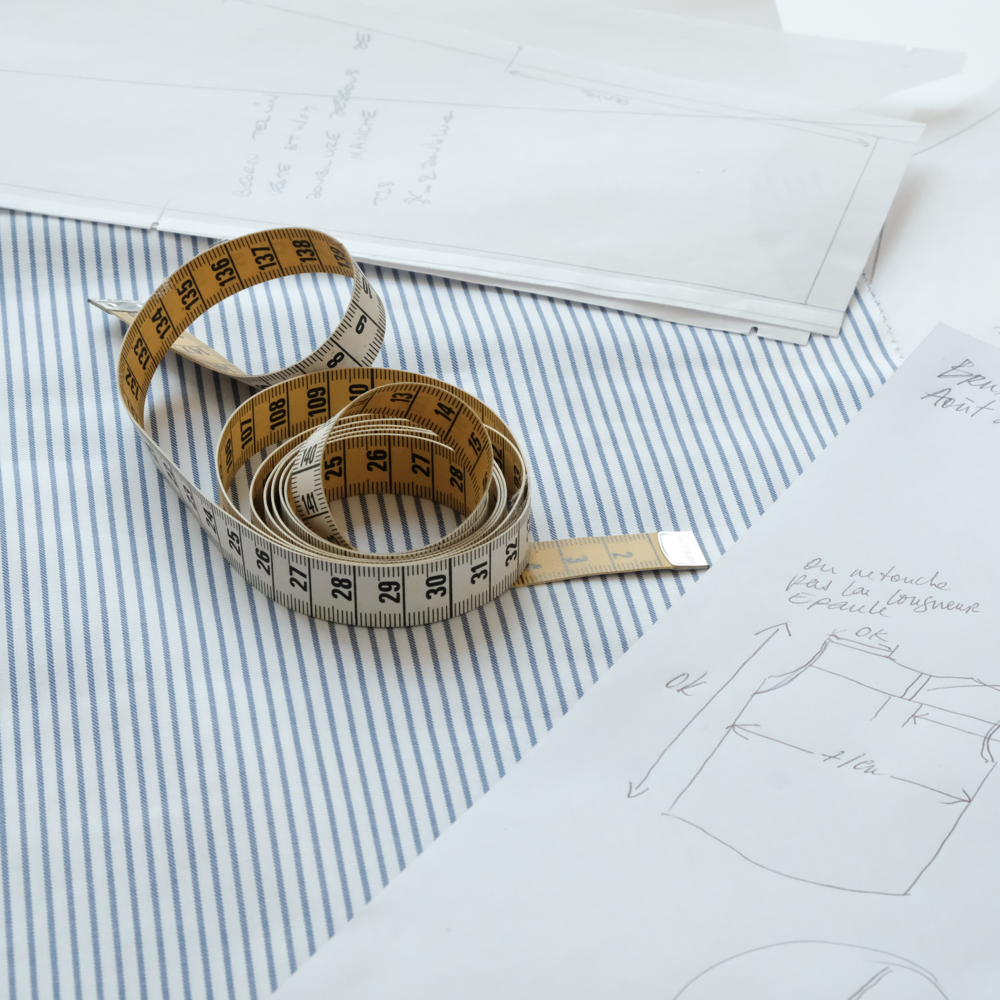

Conseils pour une consommation plus durable


Il s'agit de produire dans de bonnes conditions, et de façon raisonnée pour éviter la surproduction, tout en utilisant des matières durables à faible impact environnemental. Mode éthique, éco-responsable, durable, soutenable, éco-conception, slow fashion sont des synonymes qui renvoient aux mêmes notions.
En savoir plus 